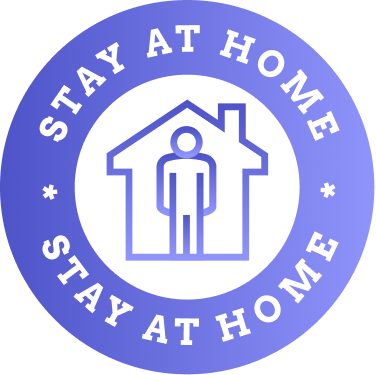

PROTOKOL KESEHATAN 5M
Cegah Penularan Covid-191. Mencuci Tangan
Rutin mencuci tangan hingga bersih adalah salah satu protokol kesehatan yang cukup efektif untuk mencegah penularan virus corona.

2. Memakai Masker
Semua orang yang sehat maupun sakit agar selalu menggunakan masker saat beraktivitas di luar rumah.

3. Menjaga Jarak
Menjaga jarak minimal 2 meter dengan orang lain. Hal ini mengurangi interaksi langsung yang dapat mempermudah penularan.
4. Menjauhi Kerumunan
Bila tidak ada keperluan yang mendesak tetaplah berada dirumah.

5. Mengurangi Mobilitas
Menghindari kerumunan dan juga berkumpul di ruangan yang berventilasi kurang baik.